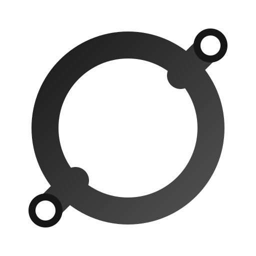

~ring — A Web Ring for Independent Websites
~ring connects independent websites, personal sites, and small web projects into one ring. Discover the independent web and join the ring.
Join the Webring
Add the following code to your website.
<nav id="~ring"></nav>
<script src="https://tildering.pages.dev/widget.js" data-webring="~ring"></script>Once the widget is installed, submit a Join Issue on GitHub.
After approval, visitors can browse the ring using Prev / Random / Next.